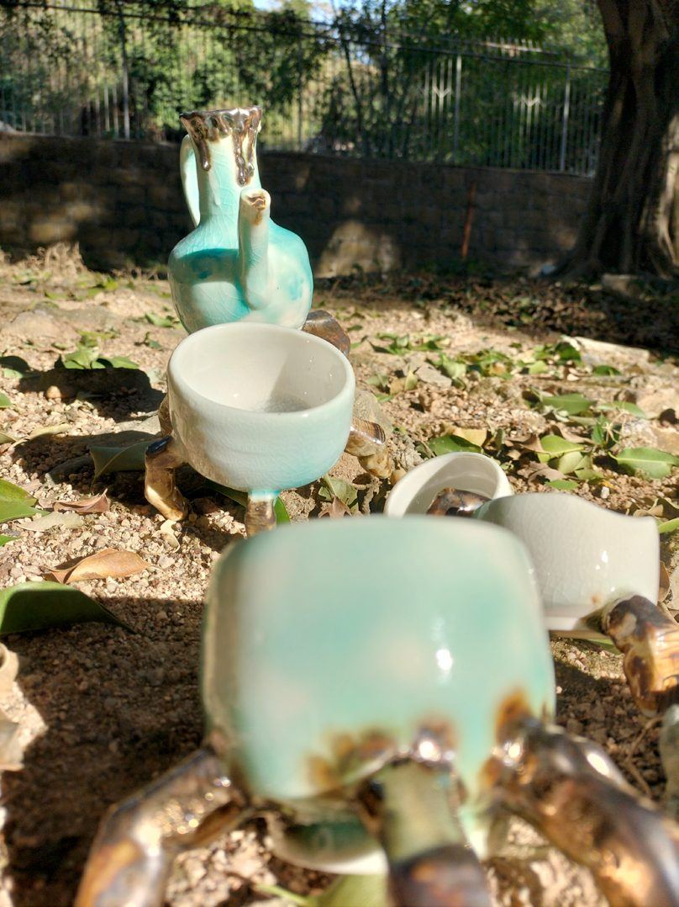

背景
2022 年到 2023 年，我在一指陶艺做陶艺师，每天面对同一台拉坯机、同一批泥、同一个窑。 这套作品是那一年里最「不守规矩」的一组。
陶艺有一个很诚实的特性：所有步骤都无法跳过。 拉坯时手抖一下，修坯时多削一刀，施釉时厚了一点，烧出来就是另一个东西。 这种「不可撤销」让我第一次真正理解材料——它不服从想法，只服从手法。
做得越多，越会发现器物天生是被使用的：它安静、服从、可预期。 于是有了一个问题：如果让它长出腿呢？

灵感
最初的灵感来源于蜘蛛、螃蟹等长腿的生物。每次见到这类生物时都忍不住驻足观察： 灵活的关节、修长的腿，很想拥有这样的腿。
再观察人的身体，最灵活的肢体算是手指——可以凹出各种非自然的造型。 影片里快速爬行的手掌，都充满着怪诞、诡异感。
因此我把这两件事接在一起：结合瓷具，让静态的器物变得有动感， 利用人的手指赋予它人的生命力。
做的时候没有画草图的习惯，直接上手捏腿。 每一条腿的角度都不一样——如果一样，它就变成了工业产品，而不是一个「活的东西」。

工艺
从设计、拉坯、修坯、施釉到烧制，全流程独立完成，没有任何一个环节假手他人。
设计
先决定这一件的「姿态」，再决定腿的数量与角度。不做图纸，直接在泥上找手感。
拉坯
壶身仍在拉坯机上成形，保留可用的把手与壶嘴——它首先得是个壶，然后才是别的。
修坯与接腿
半干时修坯、手捏接腿。这一步最考验耐心：腿太湿会塌，太干会裂。
施釉与烧制
每件施釉方式不同，窑位也不同，最终呈现出来的表面几乎没有重复。
结果
7 件独立作品
腿型、釉色、姿态各不相同，无一件重复
全流程独立完成
设计、拉坯、修坯、施釉、烧制，不假手他人
收录于个人作品集
《Personal Portfolio 2024》第 4—9 页